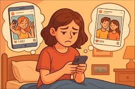

In the digital world we may face identity theft, scams, cyberbullying or exposure to harmful content.
Strong passwords protect personal information. A secure password should include uppercase letters, lowercase letters, numbers and symbols.
Users should avoid sharing sensitive information online and review privacy settings on their digital platforms.
Source:https://dplnews.com/wp-content/uploads/2023/04/dplnews-ciberseguridad-dispositivo-jb020123-scaled.jpeg
Source:YouTube. (s. f.). https://www.youtube.com/embed/3G8yJaudGC0?si=c-rCOTG_FrDAKZa-
Ultimately, it involves transforming these platforms into spaces for positive connection and learning instead of sources of anxiety or distraction. Becoming a responsible user means being mindful of our digital footprint, verifying information before sharing it, and protecting our privacy.
Social media can affect self-esteem because people often compare themselves with the “perfect lives” they see online. It is important to remember that most content is edited and does not show reality completely.
Critical consumption means analyzing the information we see online before believing or sharing it. It is important to verify sources and understand the purpose of the content we read.

Source: https://encrypted-tbn1.gstatic.com/images?q=tbn:ANd9GcSv8FhVBl25CG1gJ4rrZ0A6ILxj8txN3fm_ObQ3vlPZXH1MLoNX
Source: https://www.formaltec.com/view/img/images_cursos/ADGG040PO.jpg

Source: https://clinsmin.com.mx/wp-content/uploads/2025/08/Redes-sociales-y-comparacion-y-Terapia-Cognitivo-Conductual-1-1024x682.png
Source: https://cflvdg.avoz.es/sc/nG8vfcwI3X2ASsZH0DDSC1UaLn0=/1280x/2022/06/14/00121655216948674433557/Foto/redessociales.png